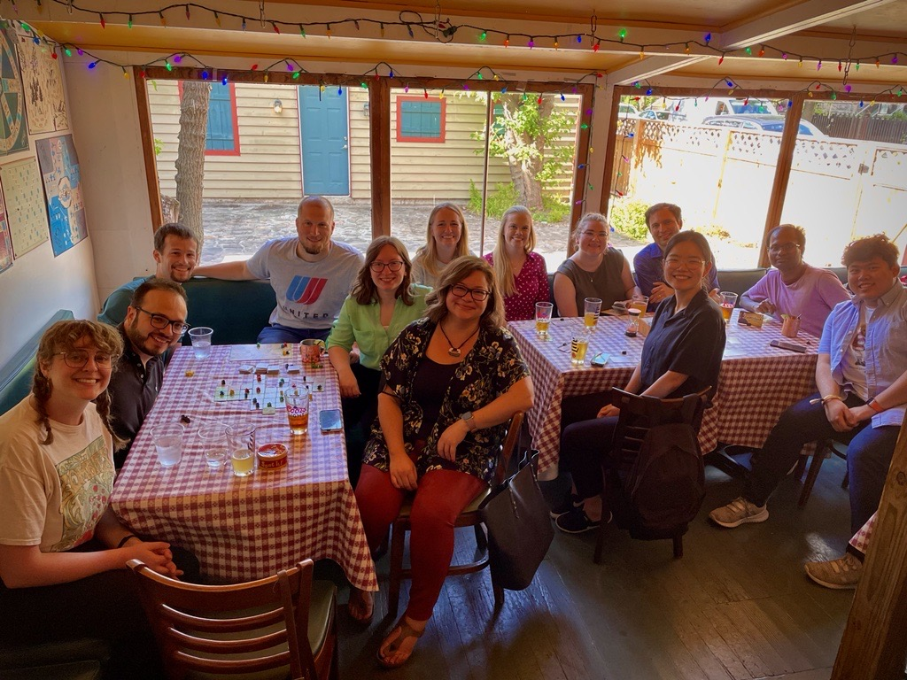

Quantitative Analytics Internship
Last summer I worked as a Quantitative Analytics intern at Wells Fargo.
My main project was to improve accuracy of an existing Markov transition model.
By conducting a thorough review of the model and engine code and actively engaging in discussions with team members,
I was able to develop efficient Python code that generates results with enhanced accuracy.
After completing my initial project ahead of schedule, I participated in a model validation project,
further collaborating with additional team members.
By the end of my internship, my team expressed satisfaction with my contributions as well as
my effective verbal and written communication skills.
Analytics & Innovation Internship
The goal of my project was to develop a prototype model for the value and cost estimation of marketing emails.
I approached to the problem with causal inference framework using propensity score matching.
I handled and transformed data with 13 million rows using SQL, SAS, and PySpark while writing algorithms on Python.
In addition, I extended the model to estimation of revenue incrementality of email campaigns and evaluated the results.
I successfully completed my internship with presenting the algorithms and results to both technical and non-technical associates.

Pulmonary Arterial Hypertension Analysis
I built a prediction model on 1 year survival of Pulmonary Arterial Hypertension patients using genetic pathways using survival deep neural network models on R and Python.
I also fit Bayesian network models using clinical variables on Yale Open Data Access platform to analyze quality of life of Pulmonary Arterial Hypertension patients.
See the abstract here.
Consumer Behavior Prediction using Airbnb Web Log data
In Graduate data mining course in my master's program, my collegues and I predicted binary decision-making time (fast/slow) of Airbnb customers until the first reservation, using web log data provided by Kaggle and published the results.
I created derived variables that helped improve prediction performance. We used various machine learning methods such as Support vector machine, Gradient Boosting, and XGBoost on R.
We published the work [here].
L Point Big Data Competition
The topic was to provide customized contents for customers, given demographic information and purchase logs of 18 thousands of customers.
My team constructed a recommender system on R which suggests items based on demographic information (content-based filtering), purchase logs (collaborative filtering), and seasonal/weather effect.
We won the second place!
Linkage between Nutrition and Chronic diseases
Analyzed nutrition intake patterns to find linkage between nutrition intake patterns and chronic diseases using cohort data from Korean Genome and Epidemiology Study
utilizing reduced rank regression, mixed models, and generalized estimating equations.
[See here]
[and here]
[also here].